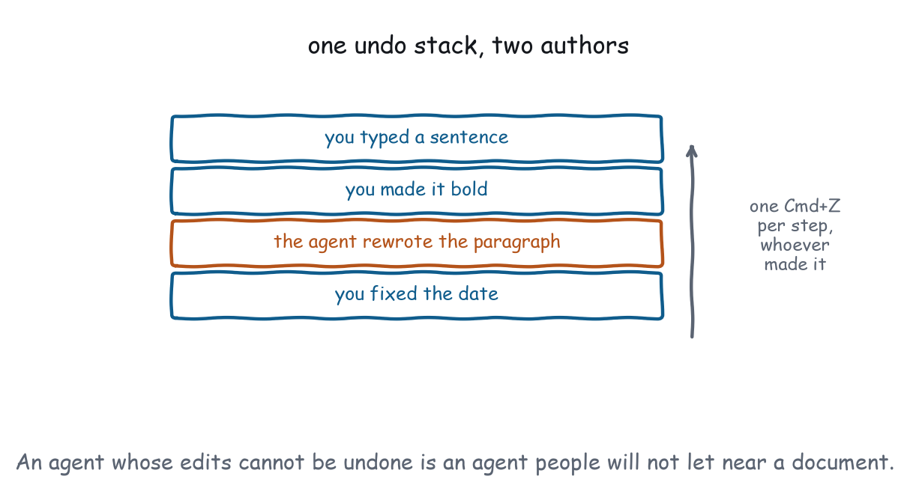

Chapter 16
Persistence and History
The sandbox took away your storage and the extension has not replaced it. Undo, on the other hand, was always yours, and in an agentic application it matters more than it ever did in a page.
You have no storage worth the name, so persist through a server tool instead. That is not a stylistic preference: the sandbox gives your document an opaque origin, and an opaque origin has no durable storage partition to write to.
Undo is a different story: nobody can build it for you, and in an application where a model can also edit the document it is the mechanism that makes that acceptable. A user who knows one keystroke reverses anything the agent did will let the agent try things. A user who does not will read every proposal twice and eventually stop asking, which is the same outcome as the feature not existing.
Where do I keep state?
state.saveCoreLevel 3Not standardisedPersist view state keyed to the view's identity.
- Ground
- No standard mechanism exists yet. The entry carries a workaround.
- Recipes
- Document Editor, Spreadsheet, Settings and Preferences
- Demo
- lab-state
state.restoreCoreLevel 3Not standardisedCome back up where the user left off.
- Ground
- No standard mechanism exists yet. The entry carries a workaround.
- Recipes
- Document Editor
- Demo
- lab-state
On the server, through a tool call, keyed by something the server already knows: a conversation identifier, a document id, or the tool arguments that rendered the view. There is no other durable place, and pretending otherwise produces a view that appears to remember during development and forgets in production.
localStorage.setItem throws SecurityError inside the frame, or hands you a partition that is discarded along with the frame, and which of the two you get depends on the browser. Neither is usable. The demonstration probes it at startup and prints the result, which is a more reliable way to find this out than reading a specification, because the behaviour varies.
There is no message either. No ui/set-state, no ui/get-state, nothing in hostContext that round-trips. The OpenAI Apps SDK has setWidgetState, which is exactly this feature, and the extension’s own “Future Considerations” lists state persistence as deferred.
The workaround is a server tool. Persist through tools/call, keyed by something stable that the server knows: a conversation identifier, a document id, the tool’s own arguments. Recipe 4 does this, with a save_document tool marked visibility: ["app"] so the model neither sees it nor can call it.
Extracted from from apps/recipes/r04-document-editor/server.js
save_document: {
description: "Persist the draft. Called by the view, not by the model.",
inputSchema: { type: "object", properties: { html: { type: "string" } },
required: ["html"] },
visibility: ["app"],
run: ({ html }) => {
document = html;
saves += 1;
return { content: [{ type: "text",
text: `Saved revision ${saves} at the server.` }] };
},
},What it costs. A round trip per save, so Recipe 4 debounces at 900ms rather than saving per keystroke. Scroll position and which panel is open end up on a server, which is absurd and is what the gap forces. And with hostCapabilities.serverTools absent you get no persistence at all.
What a mechanism would look like. ui/set-view-state from the view, and a viewState field in the initialize result coming back, scoped to the view identity the host already tracks and capped at a size the host enforces. It is cheap to specify, obviously useful, and already proven by prior art on both sides of this ecosystem.
Design around it in the meantime. Ask what genuinely has to survive a teardown. A document does. A sort order does not, and reconstructing it from the tool arguments costs nothing. The recipes here persist documents and preferences and deliberately forget everything else, which started as a compromise forced by the gap and turned out to be a better design than the one that saved everything.
How do I build undo?
history.transactionCoreLevel 3Yours to buildGroup mutations into one undoable unit.
- Ground
- The view implements it. Nobody else can.
- Recipes
- File Explorer, Document Editor, Spreadsheet, Workflow Builder
- Demo
- lab-state
A stack of transactions, where each transaction knows how to apply itself and how to reverse itself. The distinction sounds academic until an agent is editing the same document: a snapshot undo restores the whole document to an earlier moment and silently discards anything the agent contributed in between, while a transaction reverses exactly its own change and leaves the rest standing.
Extracted from from apps/labs/lab-state/index.html
const past = [];
const future = [];
function apply({ label, forward, back }) {
forward();
past.push({ label, forward, back });
future.length = 0;
draw();
announce(label);
}Three properties of that shape carry the weight, and each shows up as a specific bug when it is missing and not as a general degradation. Undo is usually discussed as a quality, something an application has more or less of. It is three invariants, and each one you drop produces a reproducible complaint you can write a test for.
future.length = 0 on every new action. Keeps the history a line, which is what users expect.
A label per transaction. Lets you announce “Undid delete Contracts” and never a bare “Undid”. When an agent also writes, the label is how the user knows whose change they are reversing.
Closures, not snapshots. A snapshot undo restores the whole document and silently reverts anything the agent did in between. back() reverses exactly its own change.
Grouping. One transaction per meaningful unit, not per event. Typing gets grouped by pause: Recipe 4 commits a transaction after 900 milliseconds of inactivity. Dragging gets one transaction on drop, not one per pointermove. The test is whether a user pressing Undo once gets back to a state they recognise.

What belongs in the undo stack?
history.undoCoreLevel 3Yours to buildRevert the last transaction, including the agent's.
- Ground
- The view implements it. Nobody else can.
- Recipes
- File Explorer, Document Editor, Spreadsheet, Image Annotator, Workflow Builder
- Demo
- lab-state
history.redoCoreLevel 3Yours to buildReapply what was reverted.
- Ground
- The view implements it. Nobody else can.
- Recipes
- Document Editor
- Demo
- lab-state
The operations themselves are four lines each once the transaction model exists, so the design effort goes entirely into deciding what belongs in the stack and what does not. Selection does not. Scroll position does not. A filter probably does, because a user who filters, edits and presses Ctrl+Z expects the edit back and not the filter. Those judgements are the work, and they are the part no library makes for you.
Include the agent’s changes. This is the argument of Chapter 21 arriving early. When an agent rewrites a paragraph, that rewrite goes on the same undo stack as the user’s own edits, so a single Cmd+Z takes it back. An agent whose changes cannot be undone is an agent people will not let near their document, and correctly so.
Recipe 4 pushes exactly one transaction when the user accepts a proposed rewrite, so a single Cmd/Ctrl+Z restores the human’s words in one step, without unwinding through the agent’s paragraph. It is nine lines of code, it is the entire safety argument for letting a model edit a document, and check_render.mjs asserts it: accept the proposal, press undo, expect the original text.
Do not include selection, scroll, or view state. Undo that restores a scroll position feels broken, because the user’s model of undo is about content. Some editors undo selection changes as part of restoring context, which is a defensible variant, but undoing a pure selection change as its own step is not.
Bind the shortcuts. Cmd/Ctrl+Z and Shift+Cmd/Ctrl+Z, with the caveats from Chapter 10 about the host possibly owning them. Provide visible buttons too, because a shortcut the user cannot see is a shortcut most users do not have.
Accessibility. Announce the label, both ways. A screen reader user pressing Undo needs to hear what was undone; a silent stack change is indistinguishable from a key that did nothing.
Where the two interact
Undo depth is state that cannot survive a teardown, because forward and back are closures and closures do not serialise. A view that persists its document and not its history returns with a document it cannot un-edit.
That is usually the right trade. Serialising a transaction stack means representing every operation as data, which is a substantially larger design, and the value of undoing something from before a reload is low. But it should be a decision you made. Recipe 4 persists the document, drops the history, and says so.
What actually has to survive?
Because every save costs a round trip, the useful discipline is to sort your state into three buckets before writing any persistence code at all. Two of the three buckets turn out to need nothing.
Reconstructible. Anything derivable from the tool arguments or the tool result. A sort order, a filter, which tab is open, the current page. All of it comes back for free on the next render, and persisting it is work that buys nothing.
Worth a round trip. Documents, drafts, annotations, preferences. Things a person made. These go to a server tool, and the cost is real, so debounce them and save on pause rather than on change.
Deliberately forgotten. Undo history, scroll position, transient selections. Losing them is mildly annoying and keeping them is disproportionate work, particularly for undo, where serialising a stack of closures means redesigning the whole transaction model as data.
Recipes 4 and 13 persist exactly the second bucket and say so in their entries. The value of writing the buckets down is that it turns “we should save state” into three short lists, one of which is empty work.
A transaction, in full
The shape is small enough to state completely in a paragraph, and every recipe in this book that has undo uses exactly it without modification. There is no library involved and no reason to reach for one: the whole model is two arrays and three functions.
A transaction is an object with a label, a forward closure and a back closure. apply() runs forward, pushes it onto the past, and clears the future. undo() pops the past, runs back, and pushes onto the future. redo() does the reverse. Four methods, about twenty lines, and no library.
Three refinements the recipes add on top of that shape, each of which was added because its absence produced a specific bug in a demonstration on this site, and each of which is cheap enough that there is no reason to defer it. None of them changes the transaction model; they change what gets pushed onto the stack and when.
Coalescing by pause. Typing produces one transaction per quiet period, because undo that steps back a character at a time is undo nobody uses.
Capturing by value, not by reference. A back closure that restores an array must have captured a copy, or it restores a reference to the array that was mutated. This is the bug that makes undo appear to work and then not.
Recording the index. Removing an item and putting it back at the end is not an undo. Recipe 3’s move records where the node came from, which is the difference between reversing a change and approximating it.
Conformance checks
localStorageinside the frame either throws or is discarded with the frame, and the view does not depend on it.- A view’s persisted state survives a teardown and a re-render, through whatever server tool it uses.
- An app-only save tool is absent from the agent’s tool list.
- Undo reverses exactly the last transaction and leaves later changes alone.
- A new action clears the redo stack.
- An agent-initiated change is undone by one Cmd/Ctrl+Z.
- Undo and redo announce what they did.
What to remember
Persistence is a gap with a workable but heavy workaround, so keep the set of things that must survive as small as you can defend. Undo is not a gap, it is a design, and in an agentic application it is the mechanism that makes it safe for a model to touch a document at all.